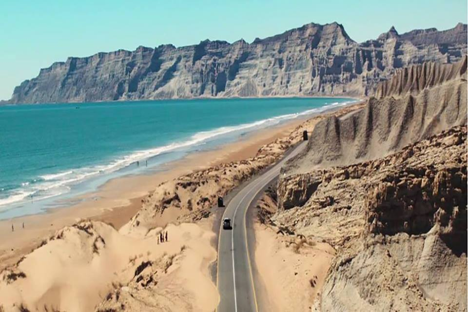

<div class="portfolio-single-load clearfix">
    <div class="custom-full-width-box">
        <div class="custom-container">
            <div class="custom-row align-items-center">
                <div class="custom-image-column">
                    
                </div>
                <div class="custom-text-column">
                    <h2 class="custom-heading">Kund Malir Beach</h2>
                    <p class="custom-paragraph">
                        
                        Kund Malir Beach, nestled along the scenic Makran Coastal Highway, is a hidden gem waiting to be discovered. With its pristine white sands, turquoise waters, and dramatic cliffs, this secluded beach offers a serene escape from the hustle and bustle of urban life. Visitors can relax on the shore, soak up the sun, and take in the breathtaking views of the Arabian Sea. For the more adventurous, camel rides along the beach and guided tours of the surrounding landscape are available, providing an unforgettable experience in this coastal paradise.
                    </p>
                </div>
            </div>
        </div>
    </div><!-- .custom-full-width-box end -->

</div><!-- end single-project -->
